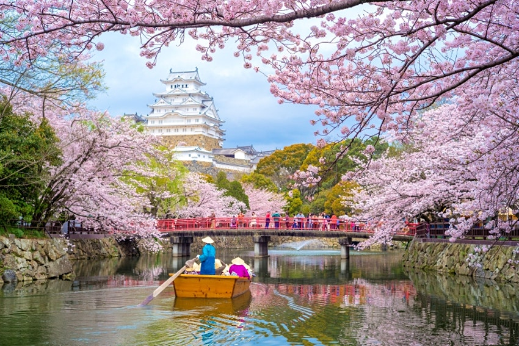
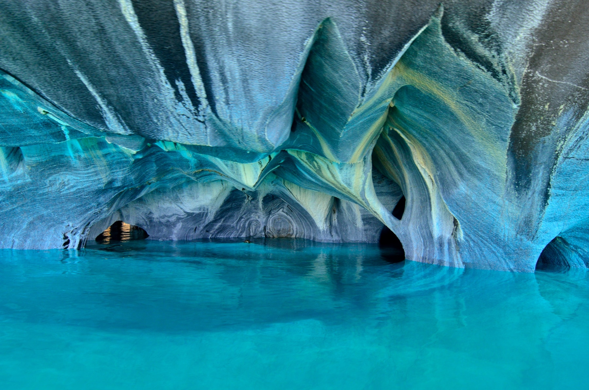
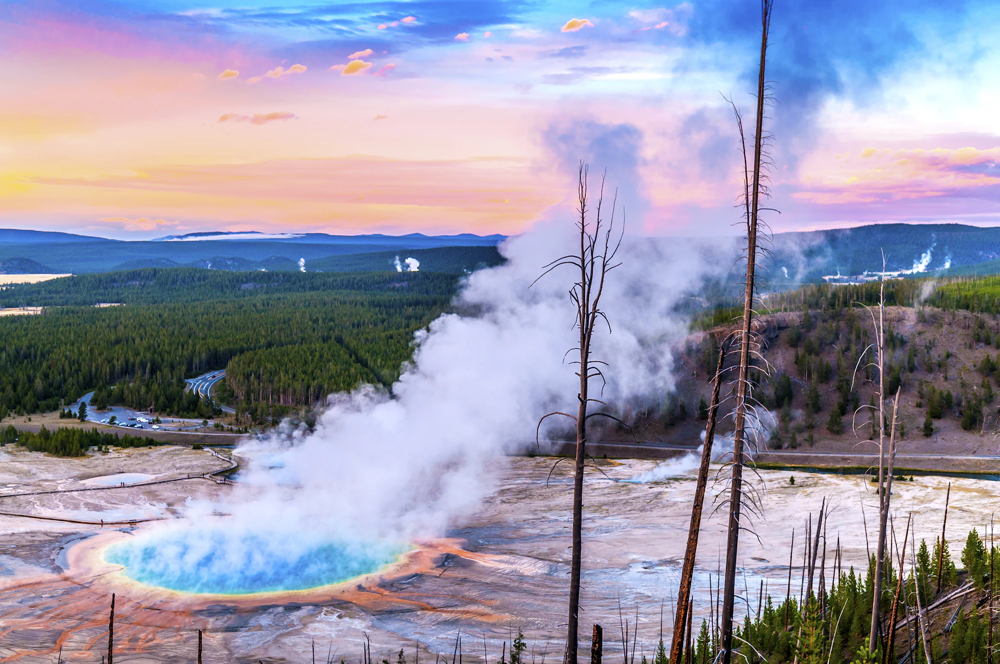
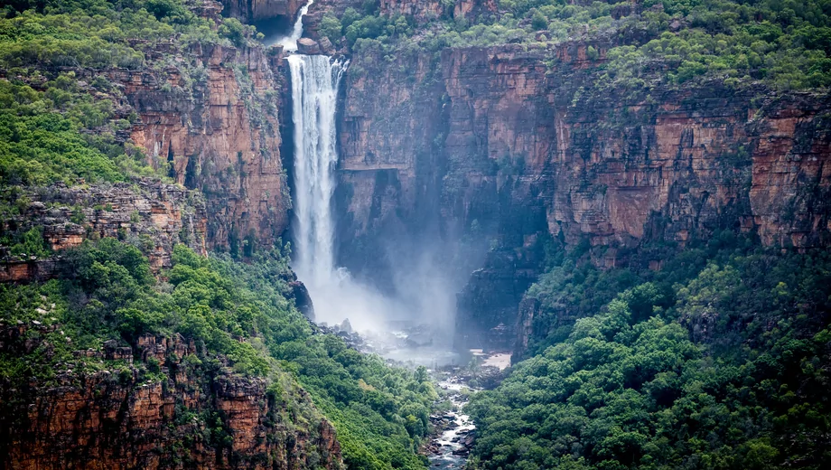
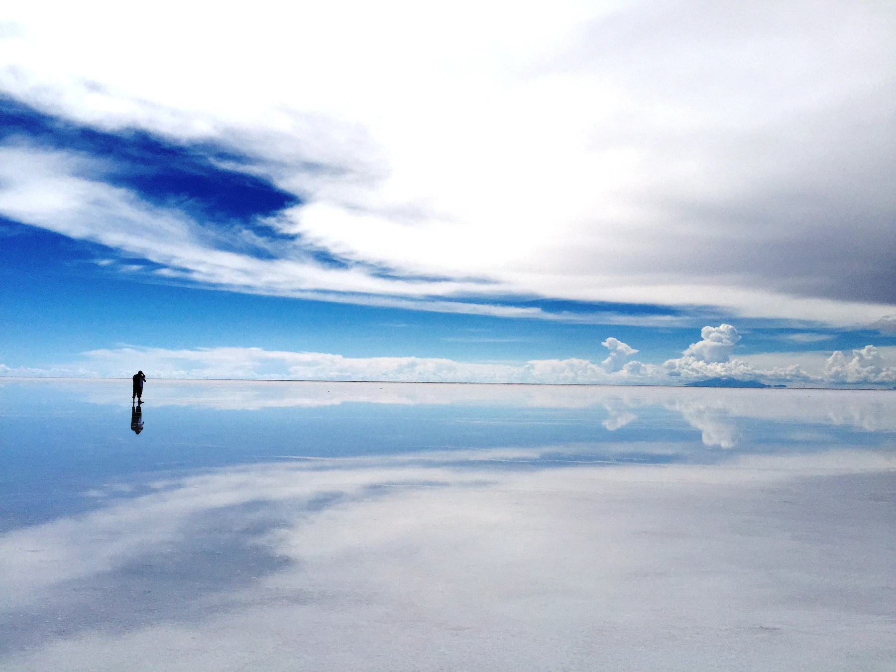
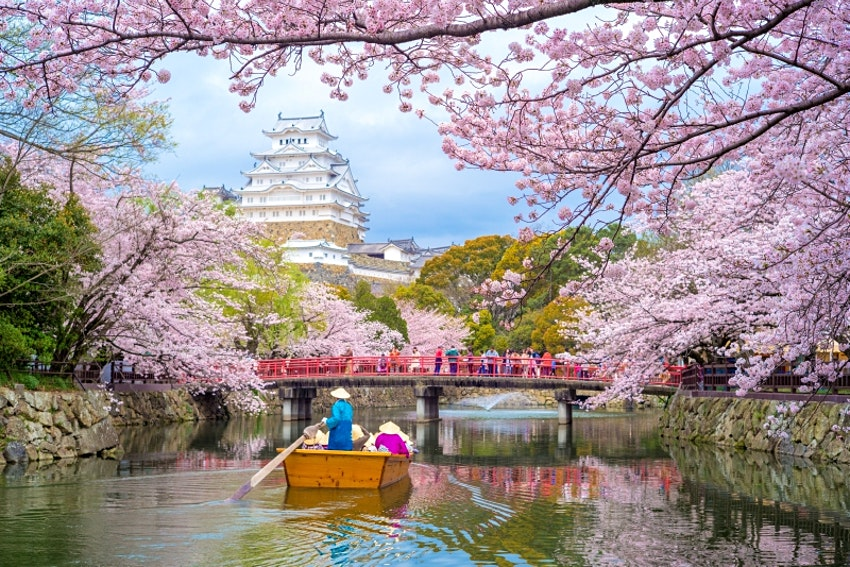
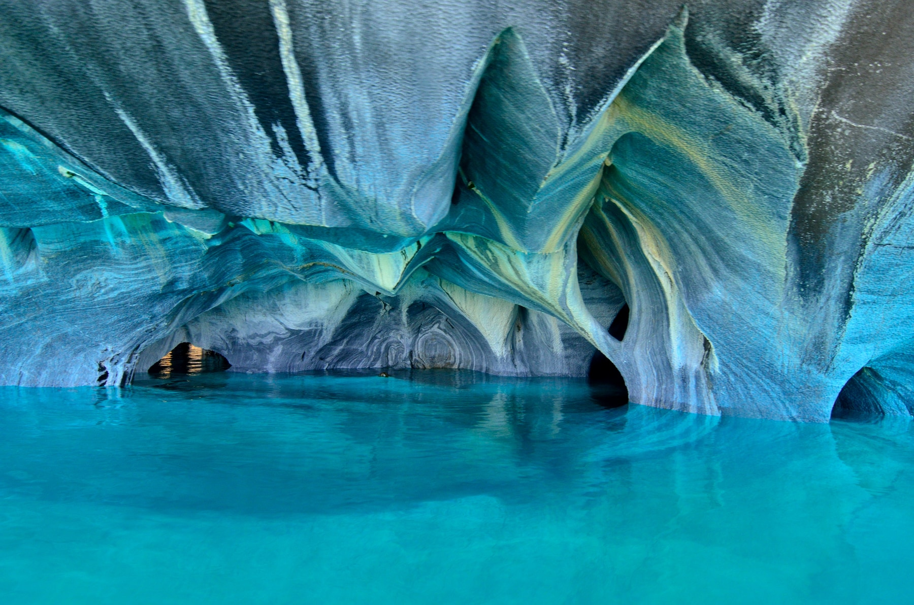
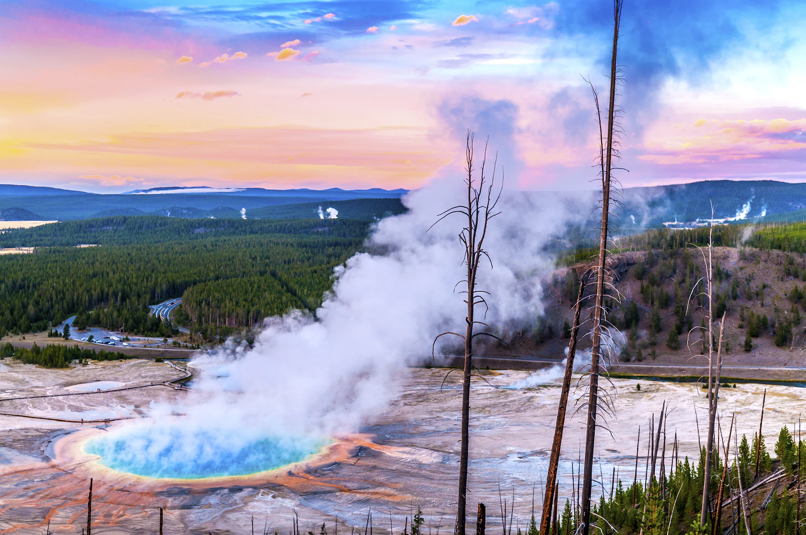
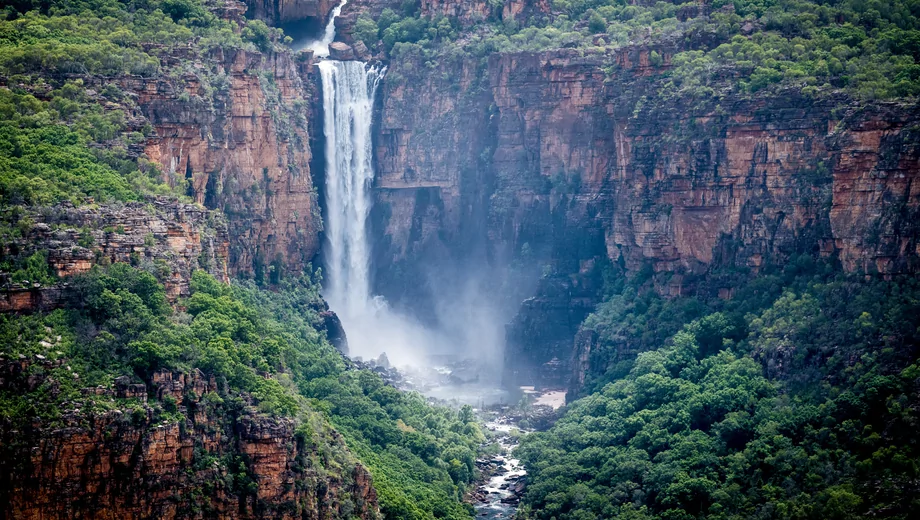
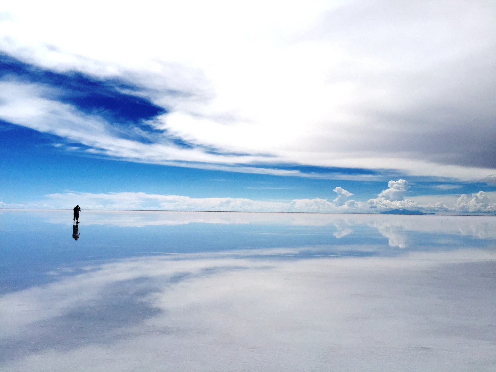

Overview
The world is vast, and there are plenty of places I have not been to, restaurants I have not ate at, and activities I have not tried. I want to start by creating a bucket list of my interests. In the future, I plan on traveling to at least 4 places (1 in the northeastern hemisphere, 1 in the northwestern hemisphere, 1 in the southeastern hemisphere, and 1 in the southwestern hemisphere). Once I've started checking items off my bucket list, I plan on turning my bucket list into a website scrapbook. Below are some of the places I'd love to go to and foods I'd love to try.
 








